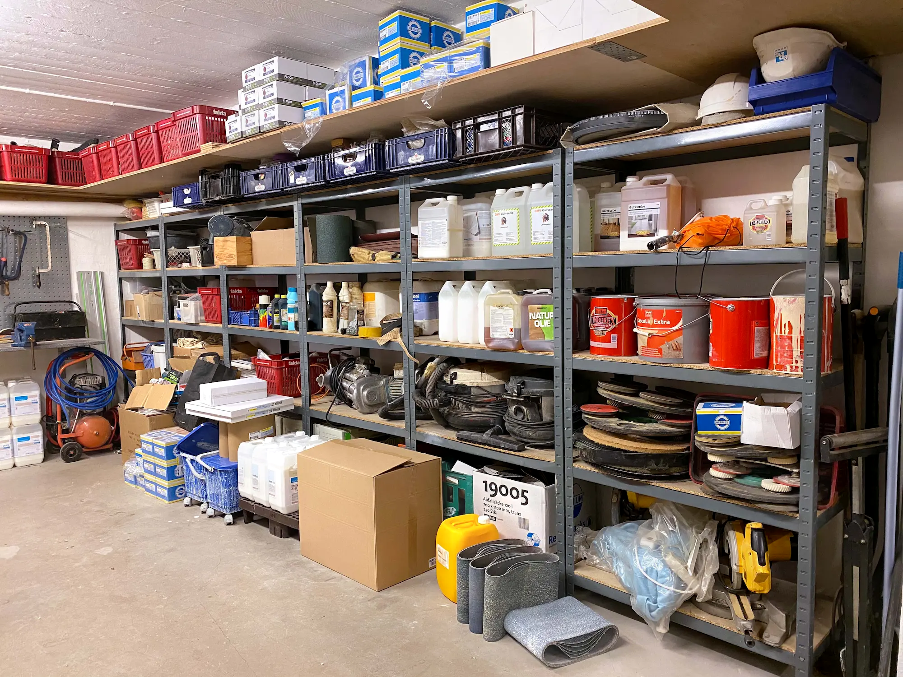
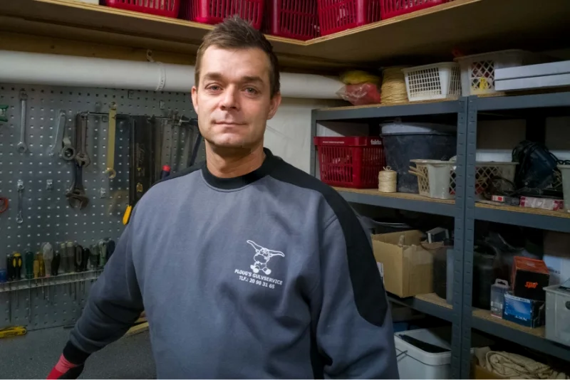
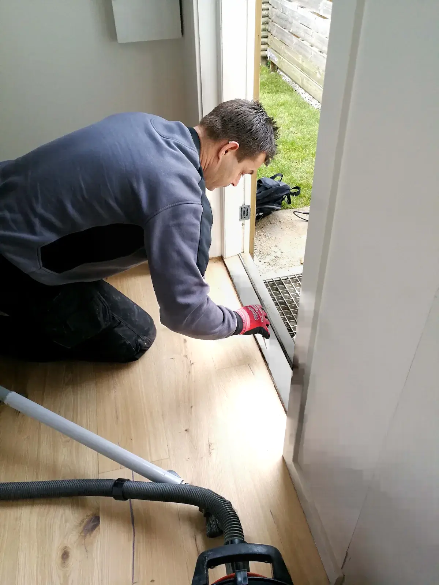
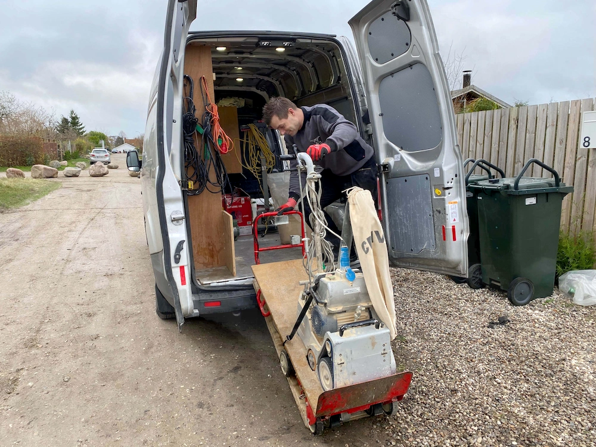

En selvstændig gulvlægger

"Hvad det giver mig, at være selvstændig er, at man kan være
stolt, når man kommer hjem efter sin arbejdsdag, man ved, man har
ydet en kvalitet.."
-J. Ploug

"Kvaliteten er alfa-omega"
-J. Ploug
